可以做
- 在健康中心主機安裝一次
- 第二台電腦只使用瀏覽器連線
- 學生名冊在初始化後再匯入
給健康中心護理人員的安裝圖解
依序完成 12 個步驟即可在健康中心主機建立系統，並讓第二台校內電腦透過瀏覽器連線。
安裝前
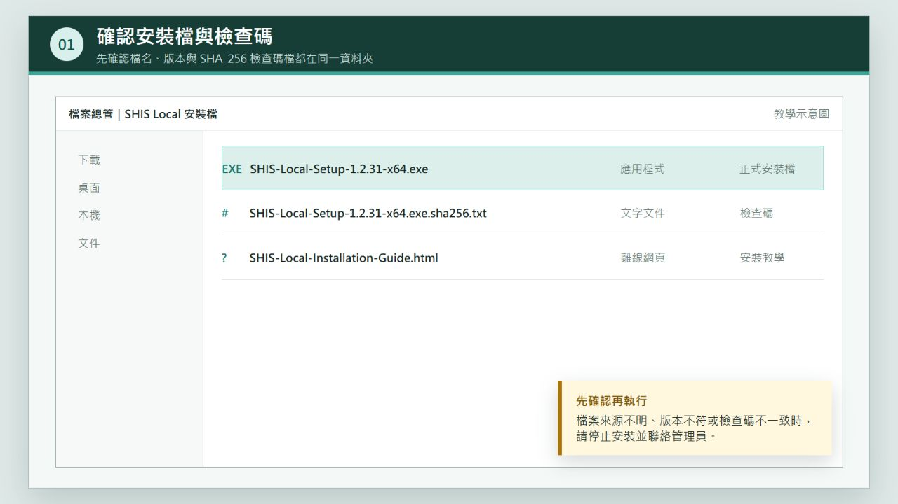
啟動安裝
.exe 安裝檔按滑鼠右鍵。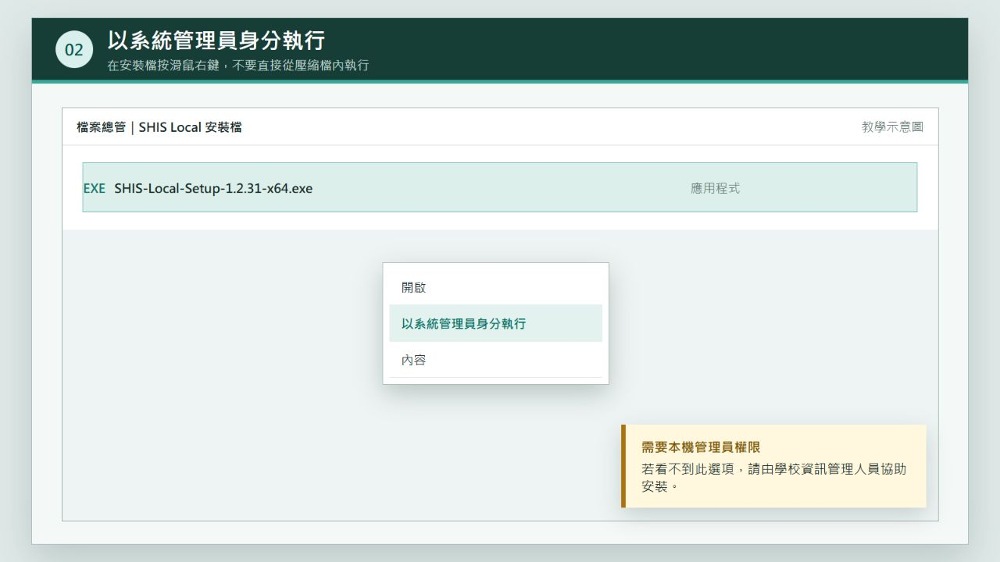
Windows 確認
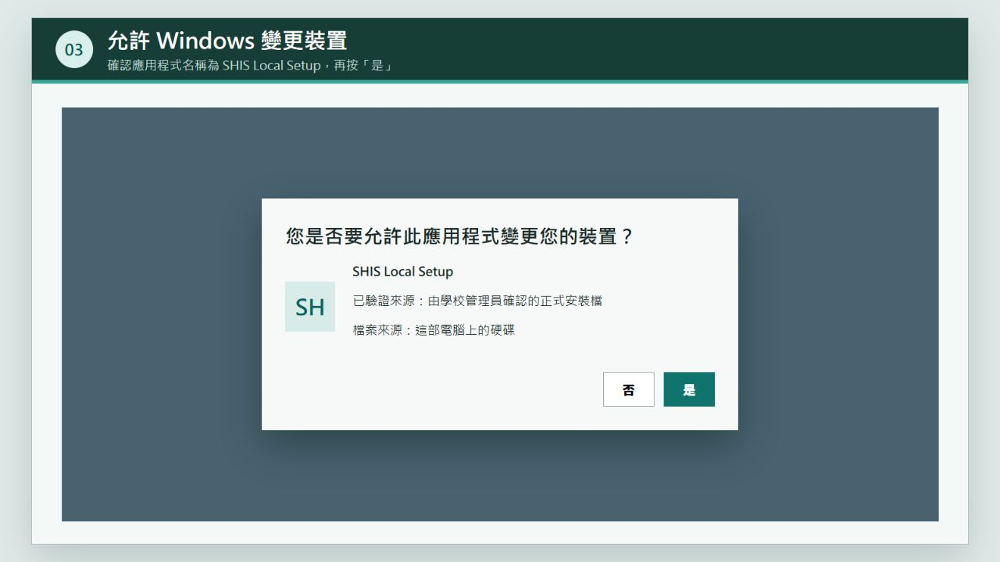
安裝精靈
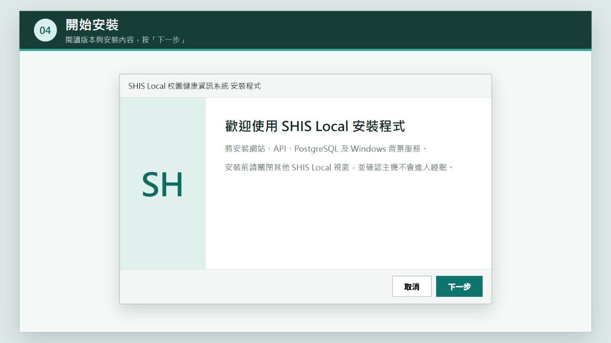
程式目錄
C:\Program Files\SHIS Local。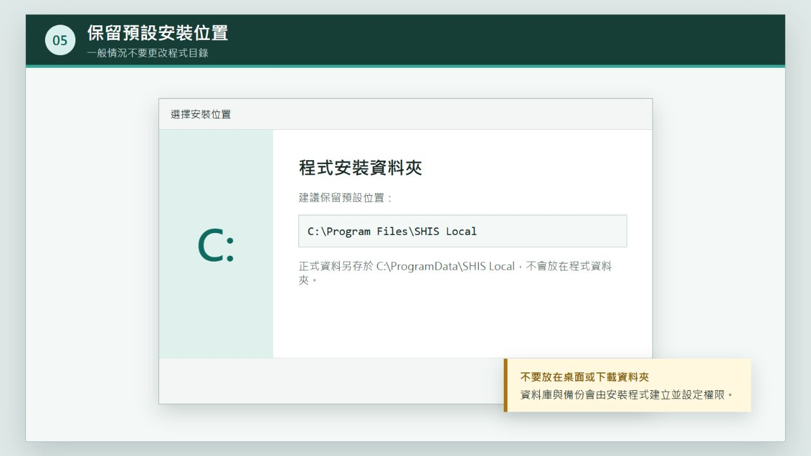
C:\ProgramData\SHIS Local，不與程式檔混在一起。自動設定
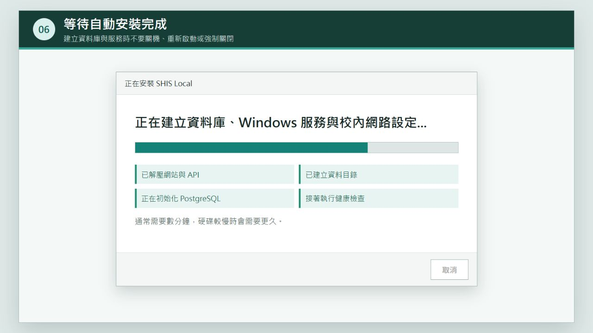
安裝完成
Local URL 與 LAN URL。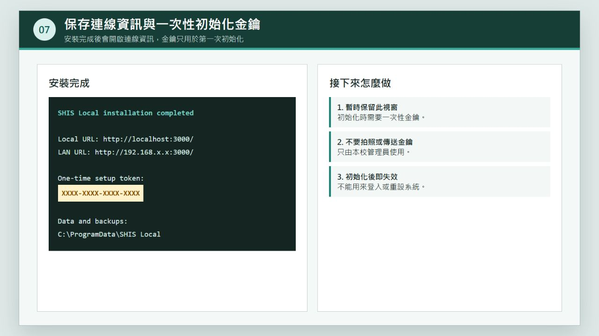
C:\ProgramData\SHIS Local\connection-info.txt。首次啟用
http://localhost:3000/。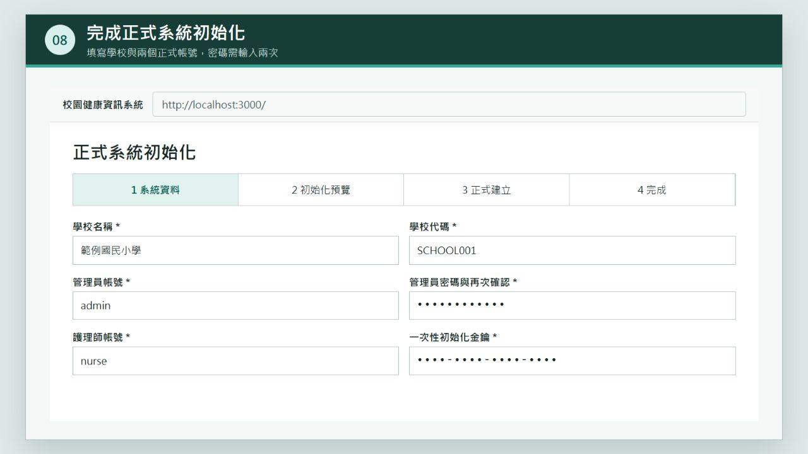
確認提交
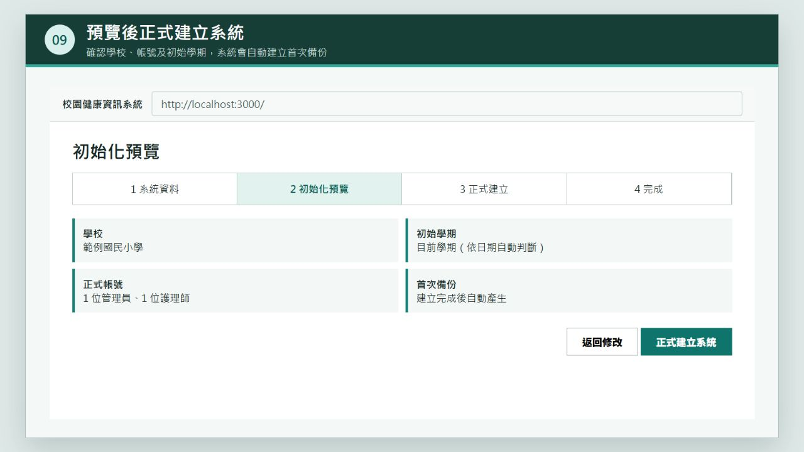
開始使用
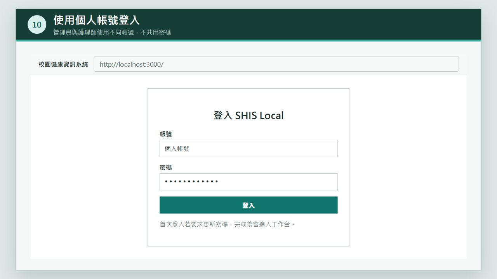
建立學生資料
.xls、.xlsx 或 .csv。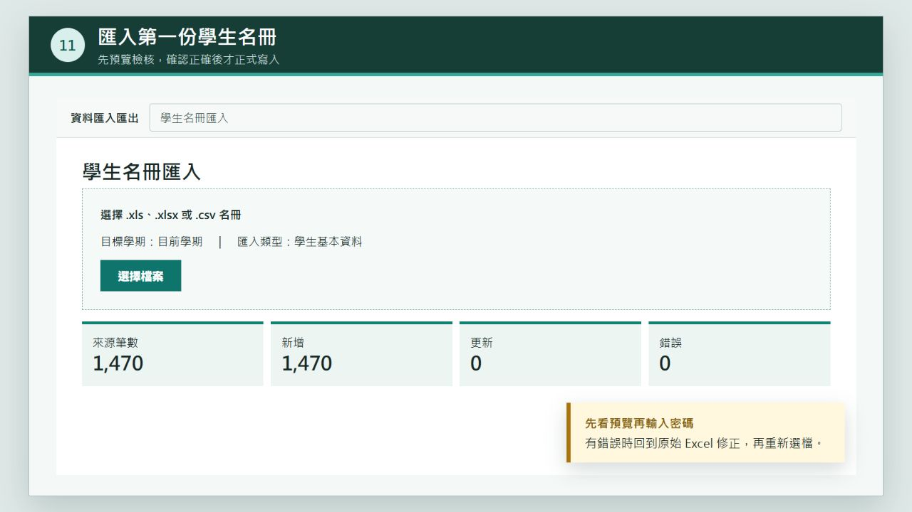
校內使用
LAN URL。Test-NetConnection 主機IP -Port 3000。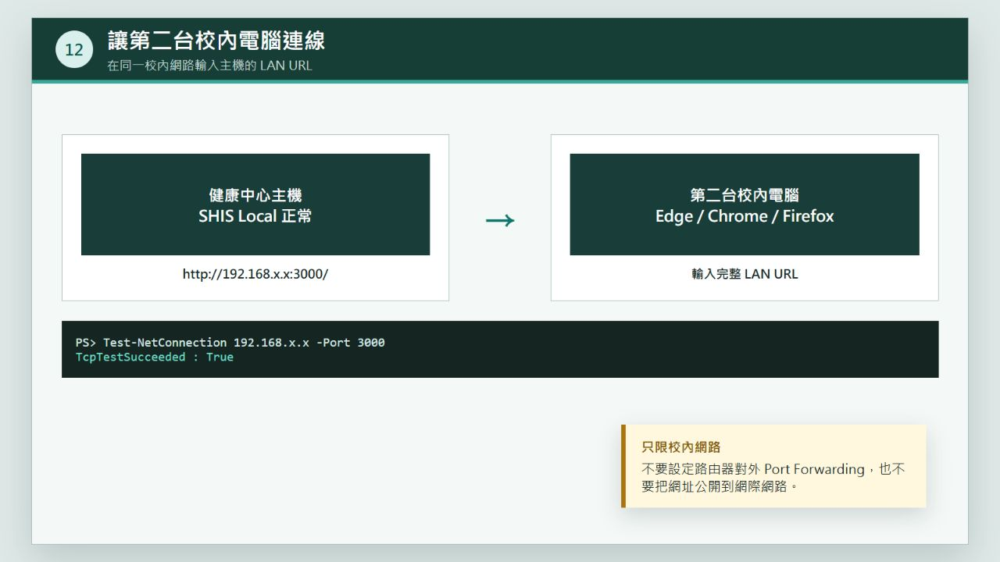
先自己檢查
不要重複安裝多次。記下錯誤碼，確認 C:\ProgramData\SHIS Local\logs\install.log 是否存在，再由資訊管理人員檢查 TCP 3000 是否被占用。
先等待主機開機後 1 至 2 分鐘，再從開始功能表執行「SHIS Local 系統檢查」。四個服務應為執行中：SHISLocalPostgreSQL、SHISLocalWeb、SHISLocalApi、SHISLocalGateway。
確認主機未睡眠、IP 沒有改變、兩台電腦位於可互通的校內網段，且 Test-NetConnection 主機IP -Port 3000 顯示 True。
請由安裝主機的系統管理員開啟。不要自行變更整個 C:\ProgramData\SHIS Local 資料夾權限，也不要把檔案複製到公開資料夾。
確認讀取的是同一台主機的 `connection-info.txt`。若系統已初始化，金鑰失效屬正常現象，請直接使用正式帳號登入。
先重新整理一次。若出現登入畫面，表示系統資料已建立，請登入管理員帳號並立即到「資料備份與還原」建立首次備份；若仍停在初始化精靈，系統會先檢查 PostgreSQL 備份工具與備份目錄，不會在檢查失敗時寫入正式資料。請記下畫面上的要求編號，交由資訊管理人員查看 C:\ProgramData\SHIS Local\logs\SHISApiService.out.log 與 SHISApiService.err.log。
交給資訊管理人員
logs 內相關記錄檔config 內的密鑰與資料庫密碼database 資料夾自行開發程式：桃園市青溪國小 黃志豪｜Qingxi Elementary School - Gavin Huang
找不到符合的教學內容，請改用「金鑰、登入、學生、連線、錯誤」等關鍵字。